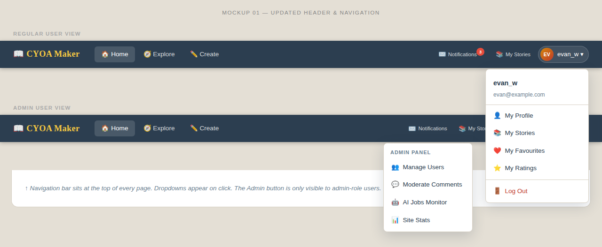
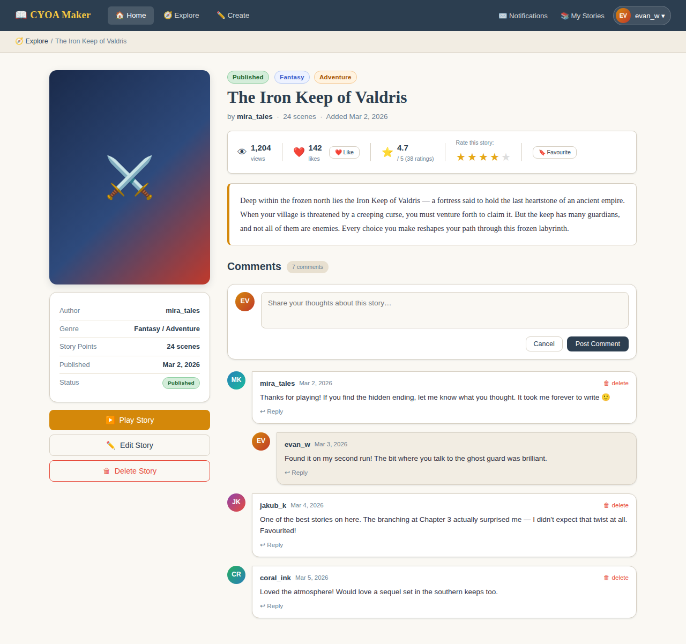
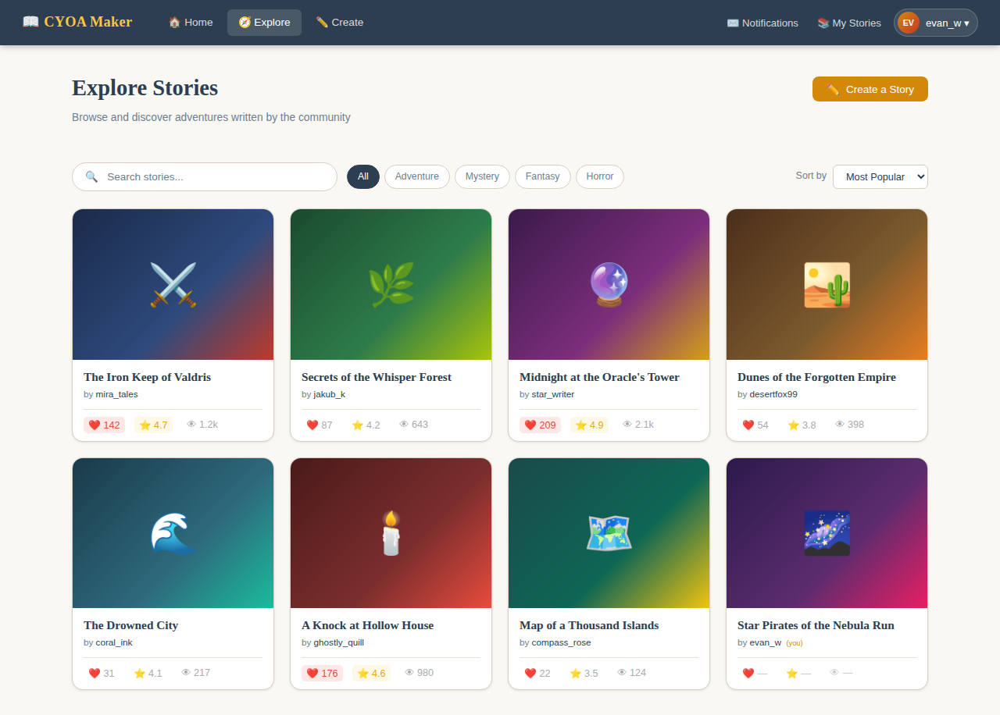
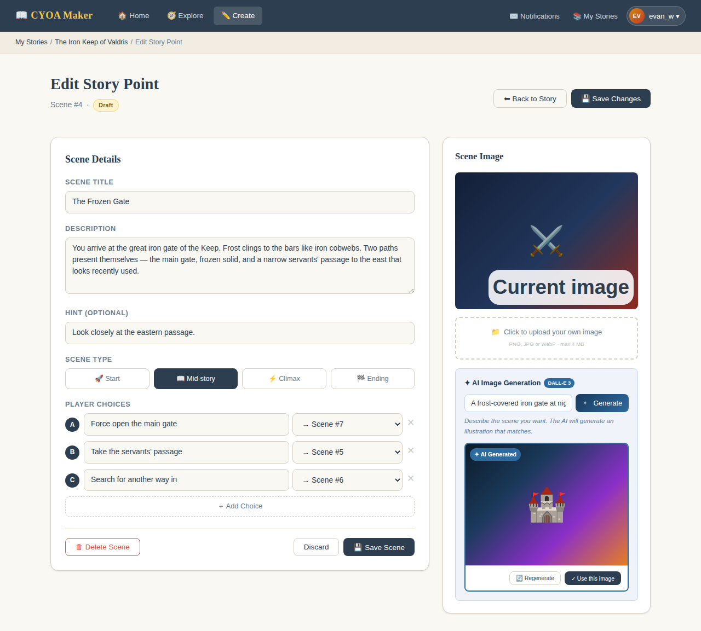
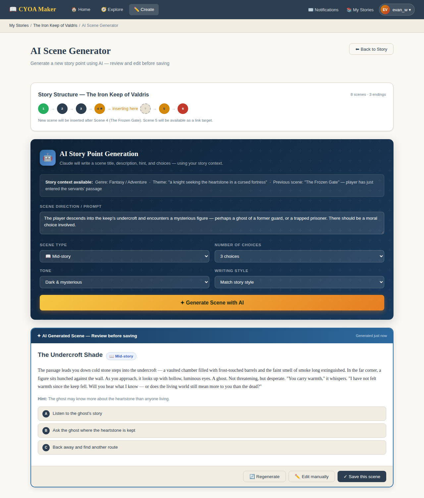
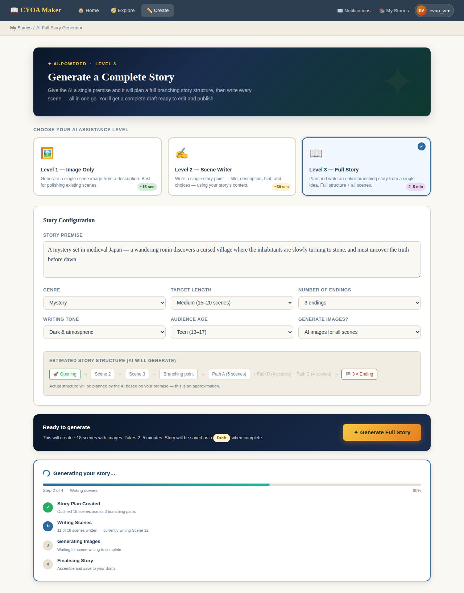
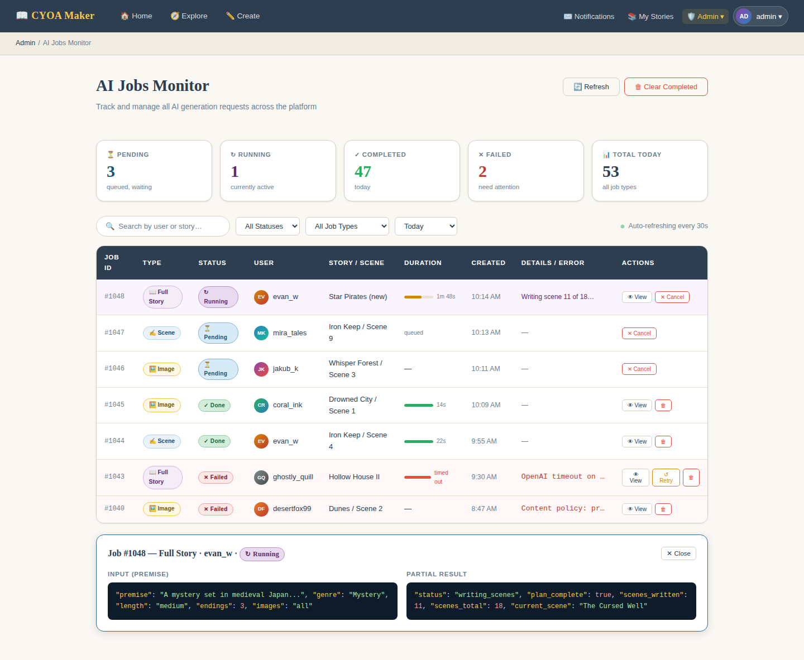

Term 3 Project | WebTech 10 | 2025–2026
This project is an upgrade to the existing Choose Your Own Adventure (CYOA) Maker — a web app where users can build, share, and play branching stories.
The goal is to make the app feel more like a real community platform. Right now it lets people write and play stories, but it's missing the social side — there's no way to rate a story, save your favourites, leave a comment, or know how popular something is.
On top of those social features, this upgrade also adds AI-powered tools so authors can get help generating images, writing individual scenes, or even producing an entire branching story from a single idea.
The top bar will be reorganised so common actions are always one click away:

Currently, clicking a story goes straight to the play page. A new summary page will sit in between, giving players a preview before they commit:

Every story will have a status of either draft or published. Only published stories appear in the public gallery and can be rated, commented on, or favourited.
Any edit to a story — whether made by the author or applied by the AI — automatically moves it back to draft. This prevents a half-finished story from being visible while changes are in progress. The author must explicitly publish the story again when they're happy with it.
This is a small change to the existing stories table: a status column (values: draft or published) is all that's needed. New stories start as drafts by default.
Each logged-in user can give a story between one and five stars — once per story. The average rating will show up on the gallery card so players can spot the best stories at a glance. This gives authors feedback and motivates quality writing.
Users can bookmark any story as a favourite. Their full favourites list is accessible from their profile page, making it easy to return to stories they enjoyed.
Every time a story's summary page is opened, the view count goes up by one. This is shown on the summary page and the gallery card alongside likes and favourites.

AI was already used heavily during development. The next step is putting AI tools directly in the hands of authors, so they can get help when they're stuck or just want to move faster.
There are three levels of AI assistance, from a quick image to a complete story:
An author types a short description and clicks "Generate with AI". An AI image model (such as DALL-E 3) creates an illustration that matches the story's theme and the scene being described. The result is applied directly to the story point.
Because any AI change moves the story to draft, the author can freely navigate away and come back to review or adjust things before publishing again.

The AI writes a full scene: title, description, a short hint, and a set of choices for the player. It takes into account the story's theme, what happened in previous scenes, and what kind of moment this should be (mid-story, climax, or ending).
A text AI (such as Claude) is used here, asked to return the result as structured data so it can be loaded straight into the editor.

An author provides a premise — for example, "a mystery set in medieval Japan" — and the AI generates a complete branching story from scratch.
This works in stages: first the AI plans the whole story structure (all scenes and how they connect), then each scene is written individually with the full plan as context. This makes the story coherent rather than just a series of disconnected scenes.

Because the server can't run AI calls indefinitely in the background, a simple job queue approach is used:
This approach was chosen because standard web hosting doesn't allow long-running processes — a cron job is the most reliable option in this environment.

One column is added to the existing stories table to support draft/published modes:
| Column | Type | Notes |
|---|---|---|
| status | ENUM('draft', 'published') | Defaults to draft. Set to draft automatically whenever the story or any of its story points are edited or touched by AI. |
Five new tables will be added to support the remaining features:
| Table | Purpose | Key Fields |
|---|---|---|
| ratings | Stores each user's star rating for a story | rating_id, user_id, story_id, rating |
| views | Records each time a story is viewed | view_id, user_id, story_id |
| comments | Stores comments and replies on stories | comment_id, user_id, story_id, comment, comment_date, reply_to_comment_id |
| favorites | Tracks which stories a user has bookmarked | favorite_id, user_id, story_id |
| ai_jobs | Manages AI generation requests and results | job_id, user_id, story_id, storypoint_id, job_type, status, input_json, result_json, error_message, created_at, updated_at |
This upgrade turns the CYOA Maker from a writing tool into a small creative community — where stories can be discovered, rated, discussed, and bookmarked.
The AI features add a layer that goes beyond most student projects: authors can get instant help at whatever level they need, from a single image all the way to a fully generated story ready to edit.
Together, the UI improvements, social features, and AI tools make the app significantly more useful and engaging for both authors and players.
3.4 Comments
Players can leave a comment on a story's summary page. Comments can be nested (replies to other comments). Admins will be able to moderate or delete comments from the admin panel.